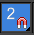

一、软件安装和界面和快捷键和面板的基本运用
1.安装3Dmax
前段时间听说了3Dmax，觉得挺好玩的，于是就下载下来玩玩，具体资源在3Dmax吧里有。
首先挑选一个中文版，下载解压后首先安装autodesk这个文件，这时会向你要序列号，说明文件里有，输入序列号后会报错，别管，点
上一步重新进入就可以了，大概十分钟安装完毕后打开软件(桌面默认是英文版，要在开始菜单里找简体中文simple chinese)需要进
行注册，这时候再打开注册机(注意，要右键，以管理员身份运行)，把申请号(就在软件的注册界面)复制粘贴到注册机的requertion
框内，然后点击生成(中间那个按钮),再点击petch，提示补丁完成，然后把生成的注册码复制粘贴即可。
2.界面
点击左上角图标，有新建、保存、导入、导出、重置(还原到初始场景)等选项。
最上方，向右，图标的作用依次是新建(Ctrl+N)、打开(Ctrl+O)、保存(Ctrl+S)、撤回(Ctrl+Z)、重做(Ctrl+Y),还有工作区类
型的选择列表。
下方一栏是菜单栏,再下方是工具栏，再下方就是工作面板，最右方是各种功能面板区。
工作面板分四个视图:顶视图、主视图、左视图、透视图。
功能面板区:创建面板、修改面板、层次面板、运动面板、显示面板、实用程序等。
在界面底部，是任务栏。
任何3Dmax界面主要就分这几部分。
3.基本工具和操作
选择:选择有两种方法，首先是工具栏里的
“选择对象”(快捷键Q)工具，其次是其右方的“按名称选择”。
当只想对一个图形进行操作时，可以按一下空格锁定选择。
绘制:在创建面板选择要创建的物体类型，就可以在工作面板绘制一个简单的立体图形，左键按住画出
底面，松开时底面完成，此时移动鼠标改变物体的高，再次点击绘制完成。
移动:选择移动工具(快捷键W)，点击要移动的对象，
出现空间坐标轴:
将鼠标移动到对应的坐标轴上(坐标轴高亮)上，就可以使物体在对应方向移动，也可以移动鼠标到两坐标轴相交的平面上同时进行两个方
向的移动，还可以直接放鼠标到三个坐标轴相交的最底部的小方块上，就可以在任何方向上移动。
工作面板视图最大化:选择任一视图，Alt+W或点击最左下角“最大化视口切换”。
去掉视图的网格:快捷键G。
视角:滑动鼠标滚轮，视角以鼠标为中心变化。鼠标中间按住不动，可以在当前角度下平移视角，按住
Ctrl键可起加速作用。Ctrl+R出现视角控件，可以旋转变换观察视角(在圈内操作变换视角，圈外操作变换平面角度)，Ctrl+x视窗全
屏化，顶视图快捷键T。
旋转:选择旋转工具(快捷键E)出现旋转控件，可以使物体转动，
每次旋转的角度大小可以在“角度捕捉”(快捷键A)里设置，在角度捕捉图标上右键即可出现设置框。
缩放: 选择缩放工具(快捷键R)出现缩放控件，操作与移动控件
类似。
选择缩放工具(快捷键R)出现缩放控件，操作与移动控件
类似。
捕捉开关:左键长按可出现选择2维，2.5维，3维。
移动并复制:按住Shift拖动物体到一个位置，松开后会出现三个选项复制、实例、参考，若选择后两个
则原物体与复制物体始终保持一致，即相关联，同时变化(可用修改面板的“使唯一”消除关联)。
4.创建面板和修改面板
创建面板可以用来创建基本物体、灯光、辅助对象等。
创建好物体后，可以选中它然后在修改面板调整物体的各项参数,还可以添加或删除复杂图形的部件，很多立体图形都有“分段”这一选
项，分段即将一个部分的分成几段显示，越大图形越精致。
5.镜像工具
“镜像轴”框内可使物体改变方向，“偏移”选项可使图像按选定的轴方向偏移
位置，克隆当前选择与“移动并复制”相同。
二、软件基本设置
1.单位设置
自定义-单位设置,显示单位比例-公制，如果是室内设计一般是毫米，室外大型设计一般是米。设置完成后上方的系统单位设置的系
统单位比例要与它保持一致。
2.快捷键设置
自定义-自定义用户界面里，可以设置快捷键，右下角“重置”即恢复默认，“保存”可以保存快捷键，以便下次在其它电脑上加载。
3.视窗设置
如图视窗:
视窗的左上角，分别有三个按钮，第一个是对视窗整体进行设置，第二个能够选择视角，第三个可以设置视图里图形的样式，例如该图的
样式是粘土。